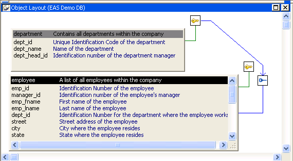

A database is an electronic storage place for data. Databases are designed to ensure that data is valid and consistent and that it can be accessed, modified, and shared.
A database management system (DBMS) governs the activities of a database and enforces rules that ensure data integrity. A relational DBMS stores and organizes data in tables.
You can use PowerBuilder to work with the following database components:
A database usually has many tables, each of which contains rows and columns of data. Each row in a table has the same columns, but a column's value for a particular row could be empty or NULL if the column's definition allows it.
Tables often have relationships with other tables. For example, in the EAS Demo DB included with PowerBuilder, the Department table has a Dept_id column, and the Employee table also has a Dept_id column that identifies the department in which the employee works. When you work with the Department table and the Employee table, the relationship between them is specified by a join of the two tables.
Relational databases use keys to ensure database integrity.
Primary keys A primary key is a column or set of columns that uniquely identifies each row in a table. For example, two employees may have the same first and last names, but they have unique ID numbers. The Emp_id column in the Employee table is the primary key column.
Foreign keys A foreign key is a column or set of columns that contains primary key values from another table. For example, the Dept_id column is the primary key column in the Department table and a foreign key in the Employee table.
Key icons In PowerBuilder, columns defined as keys are displayed with key icons that use different shapes and colors for primary and foreign. PowerBuilder automatically joins tables that have a primary/foreign key relationship, with the join on the key columns.
In the following illustration there is a join on the dept_id column, which is a primary key for the department table and a foreign key for the employee table:

For more information, see "Working with keys".
An index is a column or set of columns you identify to improve database performance when searching for data specified by the index. You index a column that contains information you will need frequently. Primary and foreign keys are special examples of indexes.
You specify a column or set of columns with unique values as a unique index, represented by an icon with a single key.
You specify a column or set of columns that has values that are not unique as a duplicate index, represented by an icon with two file cabinets.
For more information, see "Working with indexes".
If you often select data from the same tables and columns, you can create a database view of the tables. You give the database view a name, and each time you refer to it the associated SELECT command executes to find the data.
Database views are listed in the Objects view of the Database painter and can be displayed in the Object Layout view, but a database view does not physically exist in the database in the same way that a table does. Only its definition is stored in the database, and the view is re-created whenever the definition is used.
Database administrators often create database views for security purposes. For example, a database view of an Employee table that is available to users who are not in Human Resources might show all columns except Salary.
For more information, see "Working with database views ".
Extended attributes enable you to store information about a table's columns in special system tables. Unlike tables, keys, indexes, and database views (which are DBMS-specific), extended attributes are PowerBuilder-specific. The most powerful extended attributes determine the edit style, display format, and validation rules for the column.
For more information about extended attributes, see "Specifying column extended attributes". For more information about the extended attribute system tables, see Appendix A, "The Extended Attribute System Tables"
Depending on the database to which you are connected and on your user privileges, you may be able to view or work with a variety of additional database components through PowerBuilder. These components might include:
For example, driver information is relevant to ODBC connections. It lists all the ODBC options associated with the ODBC driver, allowing you to determine how the ODBC interface will behave for a given connection. Login information is listed for Adaptive Server Enterprise database connections. Information about groups and users is listed for several of the databases and allows you to add new users and groups and maintain passwords for existing users.
You can drag most items in these folders to the Object Details view to display their properties. You can also drag procedures, functions, triggers, and events to the ISQL view.
Trigger information is listed for Adaptive Server Enterprise and SQL Anywhere tables. A trigger is a special form of stored procedure that is associated with a specific database table. Triggers fire automatically whenever someone inserts, updates or deletes rows of the associated table. Triggers can call procedures and fire other triggers, but they have no parameters and cannot be invoked by a CALL statement. You use triggers when referential integrity and other declarative constraints are insufficient.
Events can be used in a SQL Anywhere database to automate database administration tasks, such as sending a message when disk space is low. Event handlers are activated when a provided trigger condition is met. If any events are defined for a SQL Anywhere connection, they display in the Events folder for the connection in the Objects view.